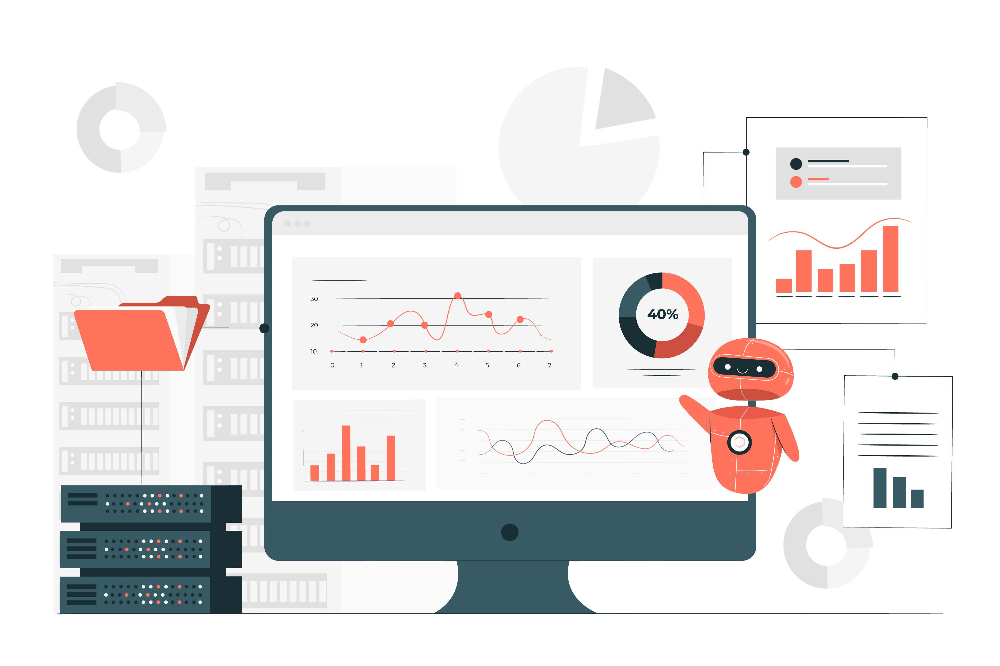

Meu nome é Iago Braz
Muito prazer, sou um mineiro apaixonado por café e com as principais áreas de atuação em business analytics, data science, gestão, planejamento estratégico e liderança de times.
Gerenciar receitas, metas e resultados dentre outros KPIs, realizar análise e criação de indicadores, predições e levantamento de hipóteses, participar das estrategias de growth além de executar treinamentos, coaching dos times, alinhamento de SLA e descoberta de novas avenidas de crescimento fazem ou ja fizeram parte da minha rotina.
Junto a isso, por estar a frente do setor Analytics, minha rotina também inclui definir e rastrear KPIs relacionadas à todos os departamentos da empresa, com o intuito de entregar o business insights de grande impacto (Power BI, Jupyter notebook, Colab, Tableau e Looker), projetos de análise e manipulação de dados (Python, R, SQL e DAX), RPA para tornar rotinas mais fluídas e assertivas (Selenium, Python, BotCity), projetos envolvendo regressão linear e regressão logística, dentre outros que facilitam a tomada de decisão em todas as áreas da empresa.
Meus liderados me descrevem como uma pessoa extremamente motivada e engenhosa, que mantém uma atitude positiva, firme e tendo como objetivo transformar a vida das pessoas ao meu redor.
Linguagens de Programação e Banco de Dados
- Python com foco em análise de dados.
- Web scraping com Python.
- SQL para extração e manipulação de dados.
- R para modelagem estatística.
- Banco de Dados SQLite, Postres, MS SQL, Oracle, MongoDB e Cassandra.
Estatística e Machine Learning
- Estatística descritiva.
- Algoritmos de Regressão, classificação e clusterização.
- Técnicas de balanceamento dos dados, seleção de atributos e redução de dimensionalidade.
- Métricas de performance dos algoritmos.
- Pacotes de Machine Learning: Sklearn e Scipy.
Visualização de Dados
- Matplotlib, Seaborn, Plotly e Bokeh.
- Power BI.
- Tableau
- Looker (Antigo Google Data Studio)
- Metabase
Engenharia de Software
- Git, Github e Gitlab.
- Cookiecutter, Virtual Environment e Docker
- Streamlit, Flask, Django e Python API's.
- AWS Amazon, Google Cloud Platform ( GCP ) e Azure.
- Databricks
Experiências Profissionais
Data Analyst Sênior - Hotmart
- Definir experimentos, coletar e analisar os resultados para validar hipóteses.
- Modelagem de dados para criação dos data Mart's.
- Uso do Power BI para criação dos DataViz.
- Acompanhar métricas e realizar análises que ajudem a identificar e priorizar oportunidades, melhorias e ineficiências nos processos da organização
Data Intelligence Sênior - Sympla
- Análises diversas com foco de descobrir novas avenidas de crescimento.
- Criação de metricas para segmentação e retenção de clientes (B2B e B2C).
- Criação e manutenção dos DataViz através do Tableau para diversas áreas da organização
- Modelagem de dados para criação dos Data Mart's pelo dbt.
Data Analyst Sênior - Take Blip
- Criar reports para área de marketing com as principais métricas do contato inteligente.
- Python e Pyspark para ETL no Databricks.
- Criação e testes em endpoints em todo fluxo conversacional
- Criação de DataViz no Power Bi para acompanhar toda evolução das métricas e KPI's do negócio.
Sênior Manager Business Intelligence & Analytics - 3DLab
- Análise de dados de mercado (posicionamento da concorrência, market share, posicionamento da marca, entre outros) utilizando ferramentas de BI.
- Analisar dados e obter insights para melhorar a tomada de decisão em todas as áreas da empresa.
- Identificar métodos para a resolução de problemas e aproveitamento de oportunidades.
- Acompanhar métricas e realizar análises que ajudem a identificar e priorizar oportunidades, melhorias e ineficiências nos processos da organização
- Interagir com diversas áreas da empresa (Marketing, financeiro, logística, operação, atendimento), para entender, definir e desenvolver projetos e iniciativas de Analise de dados/ Ciência de dados.
Postgraduate Professor in Bussines Intelligence & Analytics - Conquer
- Ministrar aulas de Python, SQL e DataViz (Power BI/Looker).
- Mentorar os alunos em suas carreiras e em seus projetos de conclusão de curso.
- Criação de aulas com foco no que é mais usado e as ferramentas mais recentes no mercado, contemplando a ciência de dados como um todo
Projetos em Ciência de Dados

Construção de um programa de fidelidade com clusterização de clientes.
Eu usei Python, Estatística e técnicas não-supervisionadas de Machine Learning para segmentar um grupo de clientes com base em suas características de performance de compra, a fim de selecionar grupos de clientes para formar um programa de Fidelidade com o objetivo de aumentar a receita da empresa. E o resultado dessa solução, caso fosse implementada, seria de R$ 15MM de dólares de receita anual.
As ferramentas utilizadas foram:
- Git, Gitlab e Github.
- Python, Pandas, Matplotlib e Seaborn.
- Jupyter Notebook.
- K-Means, Hierarquical Clustering, DBScan.
- AWS Cloud ( EC2, S3, Postgres, SQLite ).
- Metabase Visualization

Web Scrapping em marketplace buscando o menor valor
identificação de produtos com o menor valor em todo marketplace, mostrando o produto, o valor, a loja e a marca alem de armazenar tudo em um banco de dados para possíveis análises futuras.
As ferramentas utilizadas foram:
- Python, Pandas, Numpy e Seaborn.
- Anaconda, Pycharm e Jupyter Notebook.
- Mapas interativos com Plotly e Folium.
- Heroku Cloud.
- Streamlit Python framework web
Sinta-se à vontade para entrar em contato.